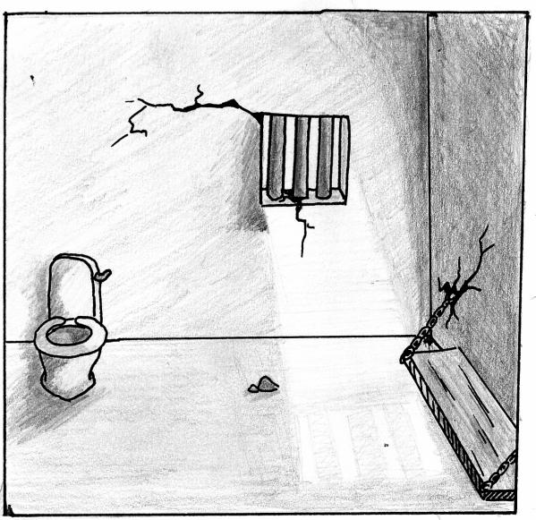

Nous voulons créer une association qui permet de lier cuisine et prison. Permettre aux déténus d'exercer des activités culinaires directement depuis la prison et d'envoyer ensuite les repas aux plus démunis pendant des maraudes en associations avec LES RESTOS DU CŒUR ou LE REFETTORIO

Donner plus de liberté aux prisonniers travailleurs
Premier pas vers la réinsertion
Passer le temps plus rapidement en rajoutant des activités